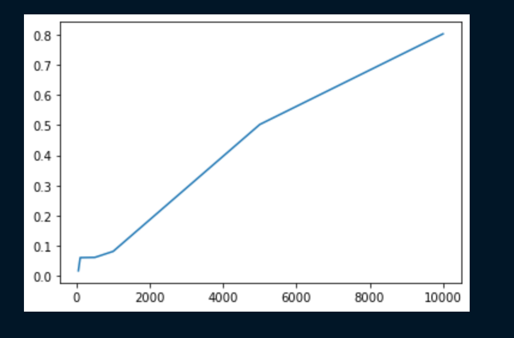
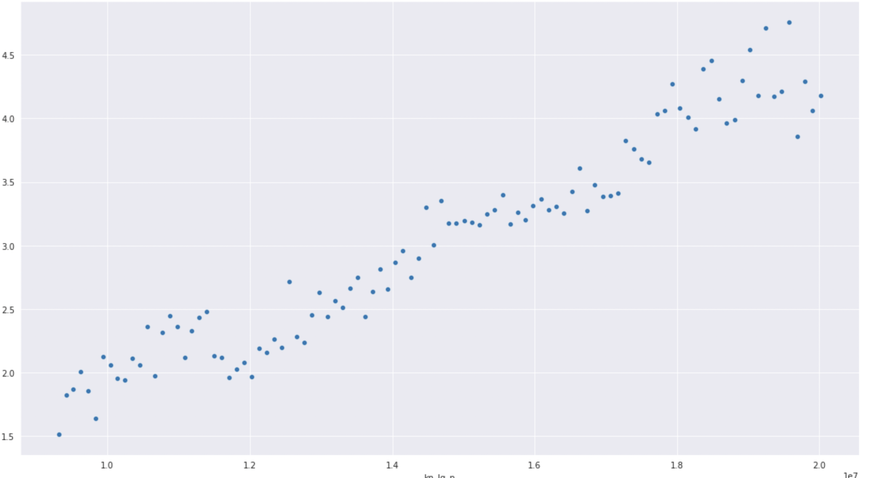
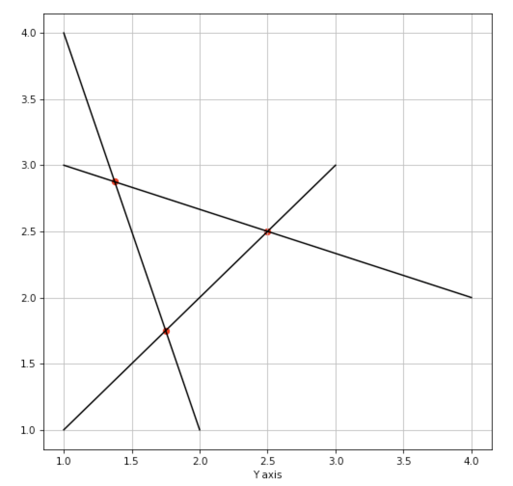
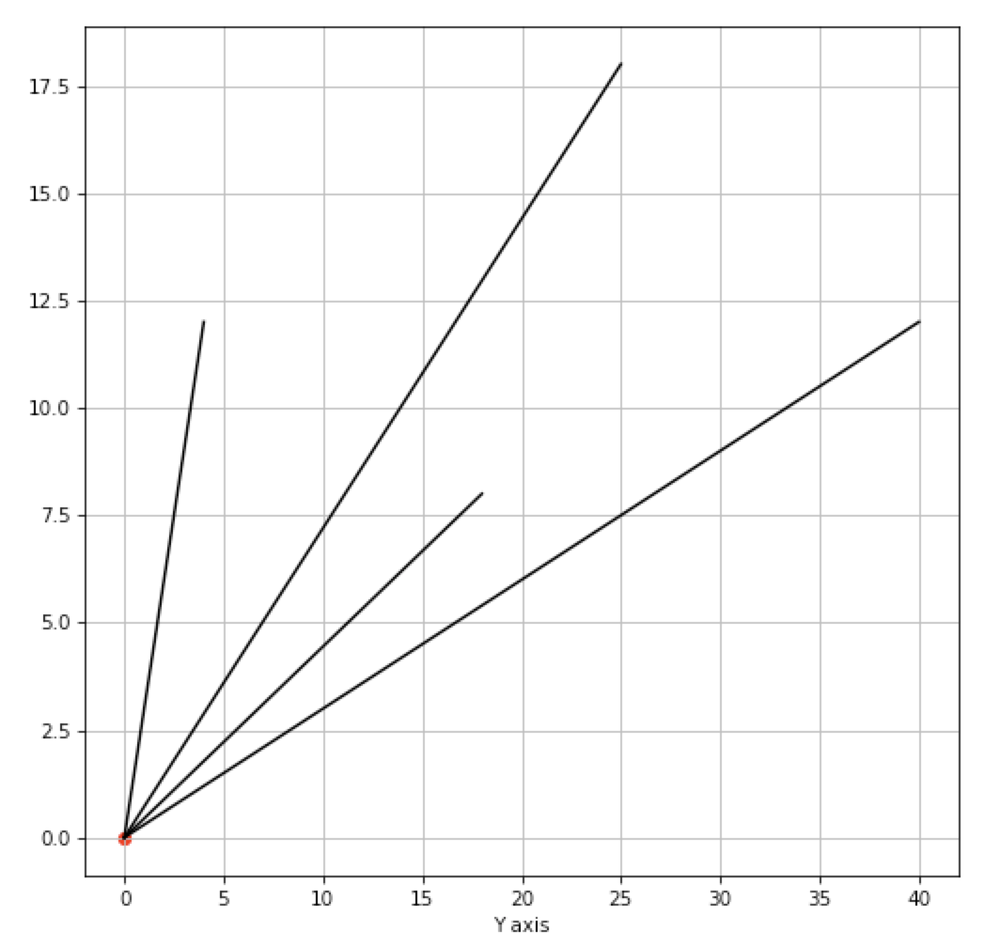
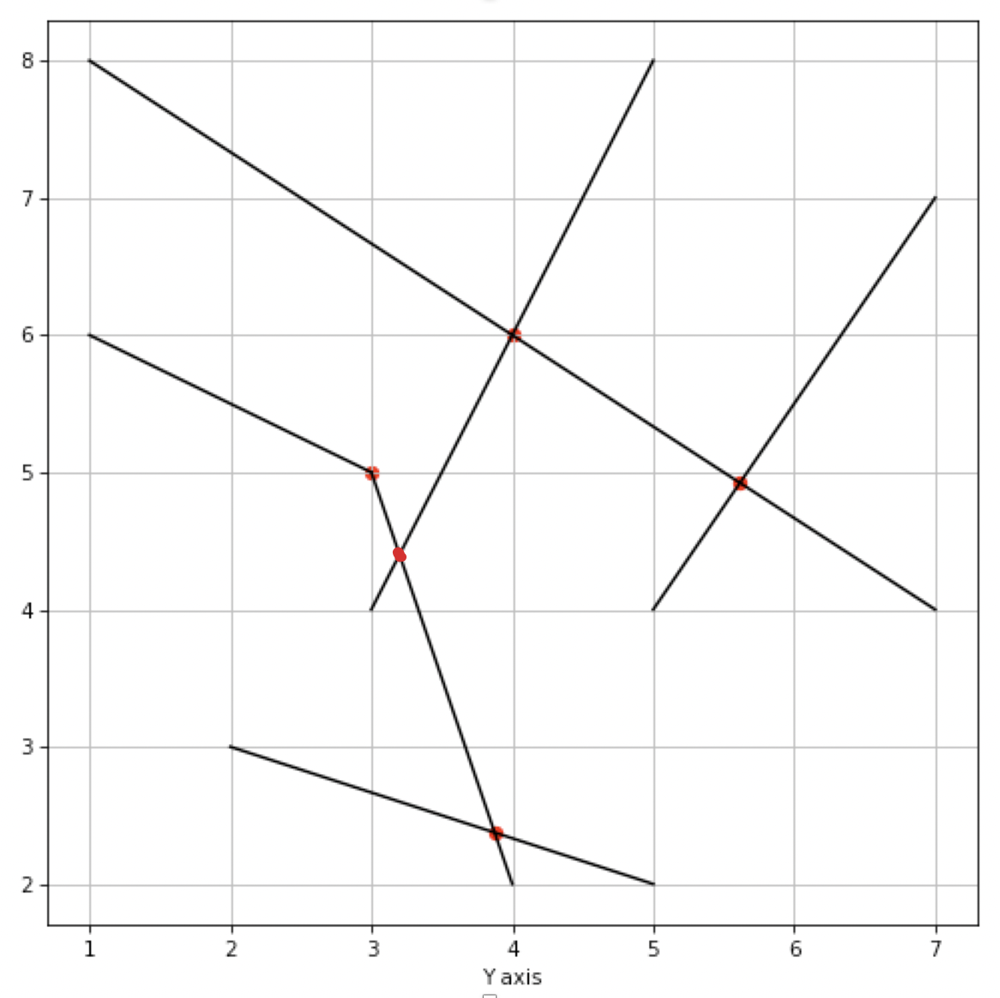
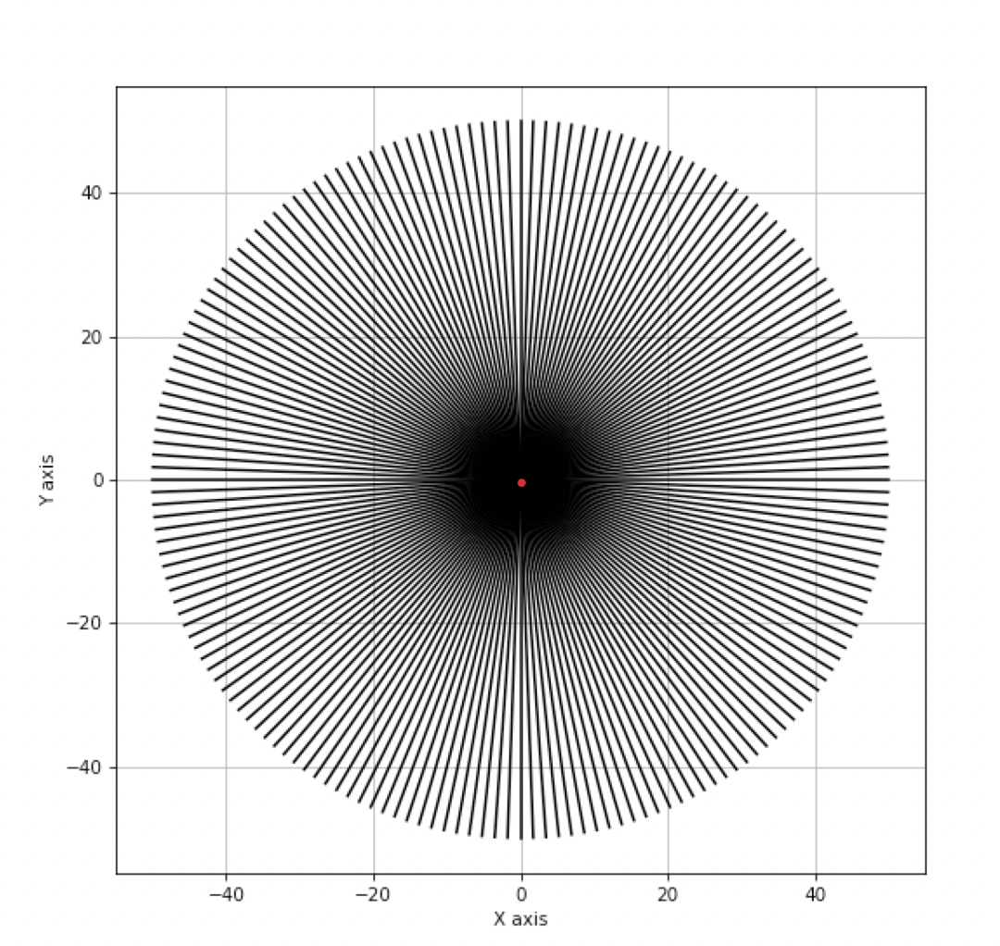
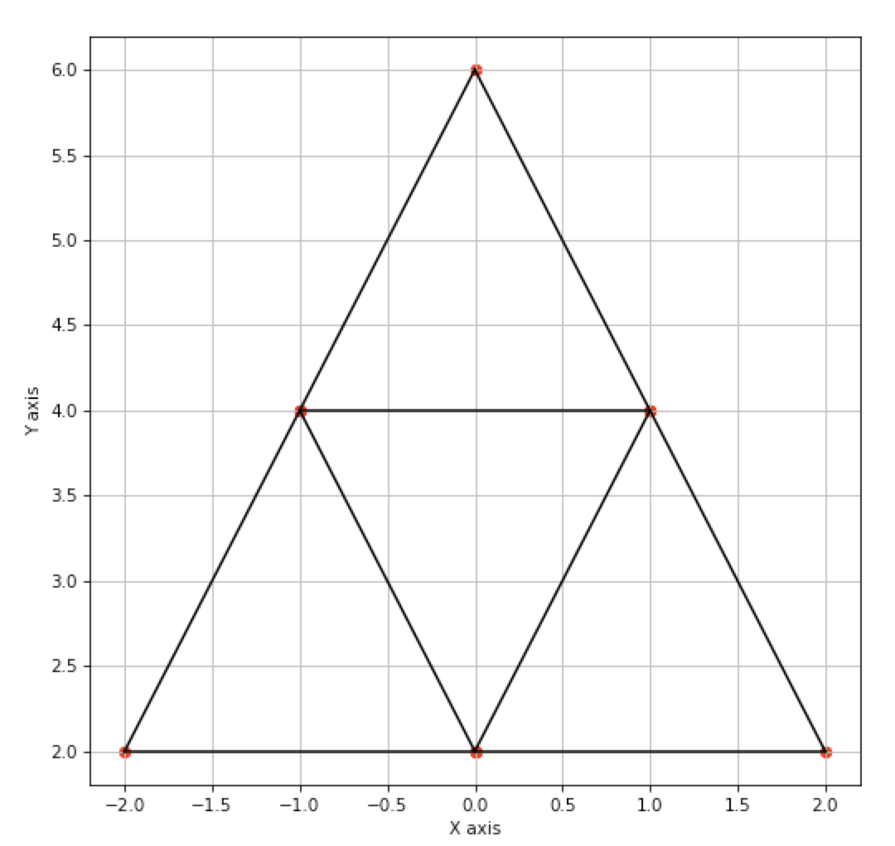
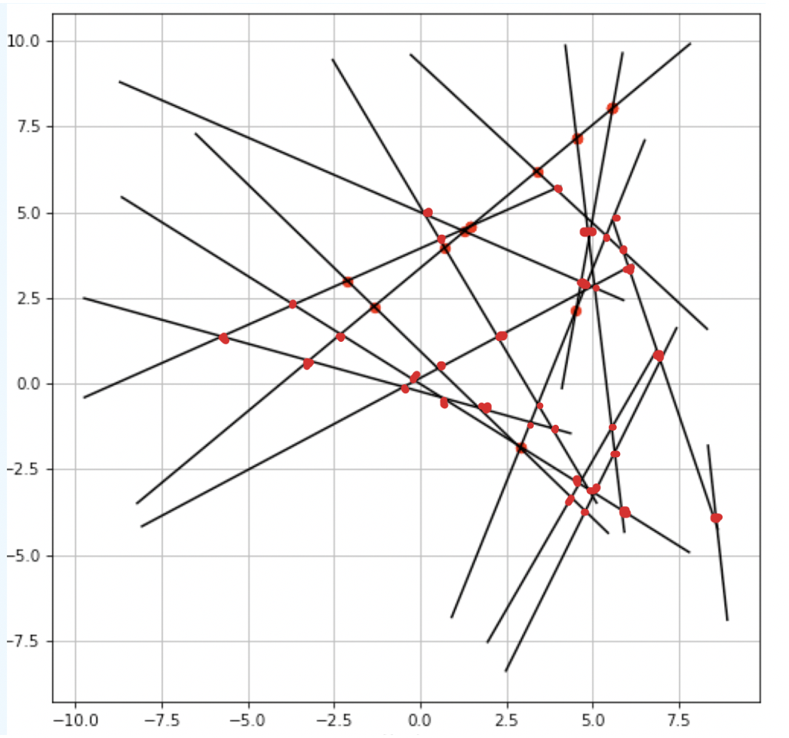

Consider a set S of n line segments {s1,s2,s3....,sn}. Each line segment si (1 ≤ i ≤ n) is associated with a pair of points, its lower end-point and its upper end-point. We have to find and report the intersection points of these line segments.
Assumption: No overlapping Line segments
The algorithm uses a sweep line (we have used a horizontal sweep line), which sweeps over the 2D plane passing through all possible event points. An event point is either the lower endpoint of a line or an upper endpoint of a line or the intersection point. The algortihm uses the fact that 2 adjacent/neighbouring line segments must among intersect first before intersecting other line segments. In this algorithm we repeatedly check immediate neighbouring line segments for interctions. Neighbours are decided based on the x coordinates of the point of intersections of the line segment with the sweep line. This ordering of the line segments is stored in another balance binary search tree called the status queue. We have used 3 functions to implement the algorithm.
The Theoretical time complexity of the algorithm is O( ilogn + n log n), where i is the number of intersection points and n is the number of line segments
i vs t plot (with n = 1e6)







